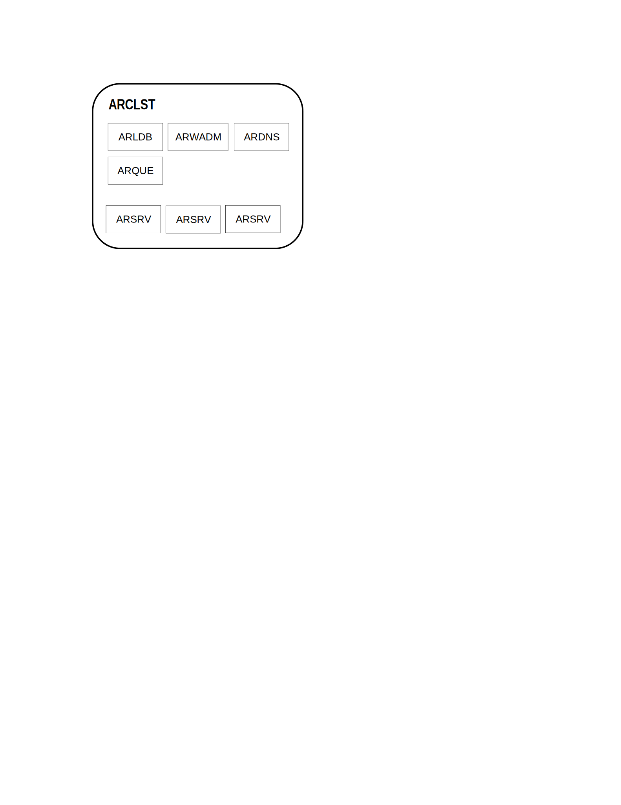

System overview ↵
ALPHAREN CORE-Integrator (ARINT) System
(c) 2021 RENware Software Systems. RESTRICTED only for project internal use
ALPHAREN CORE-Integrator
Product information
- p/n code:
0000-6151 - product short name:
arint - product version:
0.1 - product page: http://arint.renware.eu
- initial start: 2021
This product (as a "whole") is manufactured, registered and licensed by RENware Software Systems which is the copyright holder. On the other hand product components / spare parts are under producers copyright (here can be found detail about components).
Documentation
Product documentation is divided in:
- Overview contains the information to understand your ARINT system and start of using it
- User help which represents a set of procedures for "day by day" operations
- System administration which contains in essence necessary information to install, configure and maintain the system
To access documentation just follow the navigation entries.
Demo system
The system siste contains also a link to a demo system where you can see & try the system "at work" and try its capabilities.
Demo system entered data
Pay attention that this system is just a demo and no saved data is guaranteed to be preserved even your information is stored under your "user context". Keep in mind that's just a demonstration system and do not store sensitive data.
Support and assistance
The product site give you information about how to access support channel and how to buy this product. Support channel is ofered from producer site but depending on your country this will redirect you to most appropriate local dealear.
ALPHAREN CORE-Integrator (ARINT) System
(c) 2021 RENware Software Systems. RESTRICTED only for project internal use
Core-Integrator System Overview
Table of contents:
What is ARINT Core
ALPHAREN Core Integrator (aka ARINT or arint) system is a framework product for automation, integration and interoperability between distributed systems or data sources basically aimed to build API oriented, middleware, frontend and backend applications.
Practically it allows to create small-footprint and focused business oriented microservices or to transform "monolith" applications to micro-applications that will act as a single one but with a high degree of maintainability.
Product is available as distinct software or as ready to run appliance (including also some built-in components such as an internal database for business operations).
ARINT as Service bus
ARINT acts as a high level Service BUS (ie, ESB or ESOA) to connect different micro-services and to make them to work as one. As example it is already used by all RENware Software Systems products. Of course it can be used for CUSTOMER SYSTEMS and SERVICES too.
ARINT generic process flow is:
graph TD
SRV[[Service]]
RSRV[[Repetitive \n Service]]
EXT((External system))
INCH([IN channel])
EDB[(external \n databases)]
IDB[(own internal \n database)]
OUTCH([OUT \n channel])
CALLBCK([callback endpoint])
LOGFILE[(actions \n log file)]
EXT -->|call| INCH
INCH --> SRV
INCH --> RSRV
SRV --> OUTCH
RSRV --> OUTCH
OUTCH <-.-> EDB
OUTCH <--> IDB
OUTCH --> |notify| CALLBCK
OUTCH --> |logging \n actions| LOGFILERemarks to diagram
- practically an
IN channelestablish a way to address the ARINT system, how to call it - a
Repetitive Serviceis normally called once (ie, to start it) and it begins to repeat operations (in background) at defined time intervals and for a defined period (or indefinitely)
Availability and system "presence"
-
ANYWHERE. can work even the systems that must be integrated are in different non routable LANs (address systems at
httpprotocol level) -
ANYHOW. is agnostic to format, composition, structure, encoding of information required / provided by systems that must be integrated
-
ANYTIME. can work as a distributed high scalable cluster of "ALPHA-REN Integrator Machines"
-
SECURED. can work with any public standard (ie, defined at least as
RFC) of Internet security
Each ARINT system (cluster containing one or more servers) can run on premises or in cloud deployed as classic software or Docker application container, Kubernetes node / container or as any general containerization "standard" method.
Features
Typical use cases
ALPHAREN CORE-Integrator is used for enterprise, business integrations, data science, IoT and other scenarios that require integrations of multiple systems.
Real-world, production ALPHAREN CORE-Integrator environments include:
-
A platform for processing payments from consumer devices
-
A system for a telecom operators integrating CRM, ERP, Billing and other systems as well as applications of the operator’s external partners
-
A data science system for processing of information related to securities transactions (FIX)
-
A platform for public administration systems, helping achieve healthcare data interoperability through the integration of independent data sources, databases and health information exchanges (HIE)
-
A global IoT platform integrating medical devices
-
A platform to process events produced by early warning systems, (ex SAP EWS)
-
Backend e-commerce systems managing multiple suppliers, marketplaces and process flows B2B platforms to accept and process multi-channel orders in cooperation with backend ERP and CRM systems
-
Platforms integrating real-estate applications, collecting data from independent data sources to present unified APIs to internal and external applications
-
A system for the management of hardware resources of an enterprise cloud provider
-
Online auction sites
-
E-learning platforms
-
Ad-hoc data API for databases for example to protect them to direct access or to hide particular implementation details (especially in legacy old databases) allowing for a smooth and transparent transition to new redesigned implementations
ALPHAREN CORE-Integrator (ARINT) System
(c) 2021 RENware Software Systems. RESTRICTED only for project internal use
Product features
Table of contents:
General features
-
Open API full compliant
-
Integrations, Microservices, SOA and ESB in Python
-
HA load-balancer, hot-deployment and hot-reconfiguration - deploy with no downtime Browser-based GUI, CLI and
-
API - easy to use and customize
For an overview of rhe product please see.
Standards compliance
The following list presents the most known standards, protocols, data stores, formats, and so on, that ARINT system can use and is compliant with.
The actual list is larger and practically any kind of specific interface can be written in services as long as is written the corresponding code.
Standards update
Also verify your system version and update it as new standards can be included in official package releases.
The order of items is not relevant (meaning that it does not pursue a specific objective). Also classification made is not an exact one as some items can be categorized in more places. If someone know exactly what standard is looking for, a traversal of the entire list is best option.
-
Protocols:
- REST
- SOAP
- FTP
- SFTP
- LDAP
- Active Directory
- WebSockets
-
Industry standards:
- HL7 (healthcare - data exchange)
- RBAC (IT - Role Based Access Control)
- Swift (banking - Society for Worldwide Interbank Financial Telecommunication)
-
Business systems:
- SAP
- Odoo
-
Mail and messaging protocol and systems:
- SMTP
- IMAP
- Telegram
- JMS
- Twilio
- Slack
-
Data languages and formats;
- OpenAPI
- SQL
-
Databases and broker systems:
- MongoDB
- Redis
- Memcached
- Cassandra
- Kafka
-
Search systems:
- ElasticSearch
- Solr (Apache)
-
File oriented stores and depots:
- Amazon S3
-
Queue based communication systems:
- AMQP
- IBM MQ
- ZeroMQ
- JMS (Java Message Service)
-
Security and protection:
- Vault
- all cryptography standard algorithms
Services level issues and features
In writing an ARINT services there are some frequent and repeating issues. An ARINT service address them by offering built-in solutions and let developer focus on business aspects. Addressed issues are:
-
How do I connect to ARINT own resources ? How do I send user entered credentials to ARINT?
-
How do I connect to external systems or databases to store or extract data?
-
How do I convert and / or map messages from one format to another?
-
How do I automate my work so that it is repeatable across environments (ie, environments like
development,test,production)? -
How can I focus on my job instead of thinking of trivial low-level details?
-
How do I debug my code?
-
How can I reuse the skills and knowledge that I obtained elsewhere and how can I better myself?
-
How do I manage the complexity of having to integrate at least several systems and dozens or hundreds of APIs?
All these questions have answers in "Development documentation", Development Overview being a good start.
Frequent service type examples
Here are some examples of what kind of services can be accomplished by ARINT:
Most popular
Technologies most commonly used in API integrations: REST | SOAP | Scheduler | Pub/sub | SFTP | WebSockets
Databases and message queues
How to access commonly used data sources: SQL | MongoDB | Redis | AMQP | IBM MQ | ElasticSearch
Business apps
Integrating with 3rd party CRM and ERP software: Microsoft 365 | Salesforce | Odoo
Health care interoperability
Integrating health systems meaningfully: HL7 FHIR | Security
How to send and receive emails: IMAP | SMTP | Microsoft 365
Shell commands
Turning shell commands into API services: Shell commands | SSH | PowerShell
File integrations
Integrating systems using continuous or batch file transfer: File transfer | SFTP | FTP
Requests, responses and data models
Convenient access to request and response data: Requests | Responses | Data models | OpenAPI
Cloud integrations
Integrating with popular cloud providers: AWS S3 | Jira | Confluence | WordPress
LDAP and OAuth
Integrating with external security providers: LDAP and Active Directory | OAuth and REST
These are only some kind of type of supplementary services that can be written in ARINT. More details about services will be found in Development - Service anatomy.
ARINT own objects and components
Besides the features offered as external systems integration, the ARINT has its internal objects and components (that will be detailed in other documents). These are:
-
System database containing all ARINT meta-information about its objects
-
Business database containing all business entities and objects with their effective data
-
Master data containing all "cross instances" master data objects (more exactly master data objects that are agnostic to business entities and objects content)
ALPHAREN CORE-Integrator (ARINT) System
(c) 2021 RENware Software Systems. RESTRICTED only for project internal use
System Landscape
Document control:
* last update date: 230607
* last updated by: petre iordanescu
Table of contents:
- System Landscape
Basic components
Basic logical components of this system are:
-
(ARCLST) Integrator Cluster subsystem
- (ARSRV) Physical or virtual Server
- (ARLDB) High Availability assurance service
- (ARWADM) Web admin console interface
- (ARSCHED) Scheduler
- (ARKVD) Key-Value Data store
- (ARPuSuB) Publisher Subscriber Queues
- (ARVPN) Integrator VPN access
-
(ARDPX) Discovery Service, Distribution proxy (dynamic DNS)
- (ARMAIL) Integrator mail
- (#TODO) Configuration portal #NOTE: not yet assigned code
System Blueprints
ARint blueprint
-#TODO a high level blueprint
ARCLST blueprint

-#TODO start and make new descriptions (based on existing) for each component
-#TODO - from here continue review
ARCLST. Integrator Cluster
This component creates a local cluster formed by one or more ARSRV machines. Particularly can stand on one single machine with ARSRV.
This is not recommended because ARCSLT is a network-bounded system and ARSRV is a cpu-bounded one, and a cluster to cluster integration will have to suffer.
This component can run 1 per LAN machine.
ARSRV. Integrator Server
This is the core / heart of each machine. It will assure information getting, processing and sending or streing.
Other functionalities (in cooperation with ARCLST) cover scheduling, asynchronous processing and retrying in case of un-availability of an external system.
This component can run n per cluster.
ARLDB. Integrator High Availability assurance subsystem
This component assure:
- load balancing,
- failure detection,
- service availability,
- RTT ordering access to in case of multiple ARSRV modules.
All ARSRV components work ACTIVE ACTIVE inside any ARCLST. Of course, clusters work independently each of the others.
Also, each ARLDB keeps a dynamic trace of any ARCLST from the system, so a new cluster can be added without the need of any downtime.
This thing is also applicable inside a cluster where at any time, with any downtime, a new ARSRV can be added. If is right configured then will be automatically discovered and made part of cluster.
This component can run 1 per cluster.
ARWADM Web amin console
This will assure cluster administration, for all its servers and other components.
This component can run n per cluster. The reason for more ARWADM is to secure each of them.
ARDPX. Access and distribution proxy
This module is useful when an ARCLST is buit on ARSRVs physically implemented as a set of small virtual machines on a single server, having their LAN. Sure, ALPHA-REN hardware will assure that, but if you're using other hardware it will be needed.
Thiz module will stay in own LAN DMZ being directly exposed on ARCLST IP external access.
This module is responsible for:
- access the system outside its LAN without the need of a router with port forwarding.
- assurance of all reverse proxy operations.
- access on the ARCLST and ARSRVs outside cluster LAN.
This component can run 1 per machine.
ARMAIL Integrator mail
This module is responsible for sending administrative and notification mails from ARCLST cluster.
This component can run 1 per machine.
ARVPN. Integrator VPN access
This module assure VPN access into the ARCLST cluster.
Deployment over multiple LAN environments
In an environment with multiple LANs, in deployment architecture and process should consider the following aspects:
- every LAN should have at least its own ARSRV in order to communicate with other LANs
- an ARCLST can assure balancing and failure services inside LAN
- in order to assure balancing and failure services over LANs, each one must have its own ARCLST (wirh all other required components to assure corresponding services) which communicate with the others.
- a queue service is strictly required both to assure messages transport inside LAN, but also between LANs; for this reason cannot be used any queuing system but one with remote (over LANs) capabilities (aka named broker system)
ALPHAREN CORE-Integrator (ARINT) System
(c) 2021 RENware Software Systems. RESTRICTED only for project internal use
Licensing Editions and Pricing
Table of contents:

UPCOMING...
ALPHAREN CORE-Integrator (ARINT) System
(c) 2021 RENware Software Systems. RESTRICTED only for project internal use
Services
Table of contents:
UPCOMING...
ALPHAREN CORE-Integrator (ARINT) System
(c) 2021 RENware Software Systems. RESTRICTED only for project internal use
Training Programmes
Table of contents:
UPCOMING...
Ended: System overview
Documentation ↵
End User procedures ↵
ALPHAREN CORE-Integrator (ARINT) System
(c) 2021 RENware Software Systems. RESTRICTED only for project internal use
End user documentation catalog
Table of contents:
Basic work procedures
Advanced work procedures
Ended: End User procedures
System administration ↵
ALPHAREN CORE-Integrator (ARINT) System
(c) 2021 RENware Software Systems. RESTRICTED only for project internal use
System administration documentation catalog
Table of contents:
Basic procedures
Advanced procedures
-
wip... Configure a callback route (for example as return from a 3rd party electronic payment system)
ALPHAREN CORE-Integrator (ARINT) System
(c) 2021 RENware Software Systems. RESTRICTED only for project internal use
System Installation
Document control:
* last update date: 230605
* last updated by: petre iordanescu
Table of contents:
Install helpers
sudo apt-get install apt-transport-https curl
sudo apt-get install software-properties-common
sudo add-apt-repository universe
sudo apt-get install tzdata
Package key
curl -s https://zato.io/repo/zato-3.2-48849AAD40BCBB0E.pgp.txt | sudo apt-key add -
Add apt repository
sudo add-apt-repository \
"deb [arch=amd64] https://zato.io/repo/stable/3.2/ubuntu $(lsb_release -cs) main"
Install zato
sudo apt-get install zato
Apply latest updates
sudo su - zato
cd /opt/zato/current && ./update.sh
Check & confirm
zato --version
Create a quick cluster environment
Create the cluster
This will create a new cluster ARCLST named arclst in directory /opt/zato/env/arclst.
sudo su - zato
mkdir -p ~/env/arclst
cd ~/env/arclst
zato quickstart create . sqlite localhost 6379
Response should looks like that:
[1/8] Certificate authority created
[2/8] ODB schema created
[3/8] ODB initial data created
[4/8] server1 created
[5/8] Load-balancer created
Superuser created successfully.
[6/8] Dashboard created
[7/8] Scheduler created
[8/8] Management scripts created
Quickstart cluster quickstart-904765 created
Dashboard user:[admin], password:[F7qCOiabas5ToQ7EWupLrHOn9iVHzyBv]
Visit https://zato.io/support for more information and support options
Change web console password
The username web administraton console is admin. To change the password in admin, do:
cd ~/env/arclst/web-admin/
zato update password . admin
Configuration & access
Machine general configuration
- Test machine ren-cluster, 192.168.1.190
- Admin console port 8183
- Credentials admin / admin
- public access http://90.84.237.32:8183 user admin pswd admin
Machine environment configuration
- User
sudo su - zato - Path
/opt/env/arclst - web admin console path
/opt/env/arclst/web-admin - ZATO Server
arclst
System launch scripts
zato-qs-start.shzato-qs-restart.shzato-qs-stop.sh
Server start in background mode, NOT as daemon.
Installation notes
None. Everything works as documented. ATTN open 8183 port
ALPHAREN CORE-Integrator (ARINT) System
(c) 2021 RENware Software Systems. RESTRICTED only for project internal use
System Data and Objects
product version: 0.1
Table of contents:
Introductory
Naming rules
-
Objects
code-nameis not case sensitive and is a good rule to use always uppercase. The system will convert the data objectscode-nameto uppercase, even from the save step. -
New "user or client or implementation" level business objects
code-nameshould start with characterZ. Any other ARINT objects do not useZas first character in code-names, so this can make an acceptable separation of those objects that are subject of change by system updates and is a guarantee that objects starting withZin code-name will not be altered by any system update.
Object categories and models
Any data object must be in one of these categories:
-
entity - This is a relational data entity, more exactly a table to use the specific relational modeling concept. Such kind of objects are stored in relational system database.
-
json - This is an object can contain any data model and type that respect
JSONstandard. This kind of object can cover almost all kindNoSQL document typevariants. Such kind of object can be stored in any system database (relational or kv store) at your option. Default store place is kv system database. -
crypto_key - This kind of object contains keys used for cryptographic purposes. This kind of object is represented as a limited
jsontype (strict one level, no arrays, only string type keys). Acrypto_keyobject usually has one or two entries corresponding to one (in symmetrical cryptography) or two (in asymmetrical cryptography) keys, both as strings ofUTF-8characters (bytes). -
file - This kind of object is designed to keep files or directories references. This references are stored can be stored in any system database (relational or kv store) and must respect all Linux conventions regarding file names (directories are files too represented as convention with a
/character at end if is not obvious from context). So as a minimum strings ofUTF-8characters (bytes) no more than 256 characters (bytes)
As definition models the OO definition is preferred and for relational objects the SQL Alchemy is preferred option. For kv data the Python normal dictionaries can be used.
Namespaces catalog
Here are listed the main area of objects defined in System database. These are the equivalent of a namespace (or schema in relational databases terminology) and they will become in a way1 a prefix for all entities / objects contained in.
- URRM user roles and rights management
- ODEF business objects definition
- MADA global master data (cross any systems, applications, nodes, ie global for an ARINT instance)
- -#NOTE future reserved ...
Namespace URRM
URRM catalog
- -#NOTE future reserved ...
URRM_new_object_x
- -#NOTE future reserved ...
Namespace ODEF
ODEF catalog
- -#NOTE future reserved ...
ODEF_new_object_x
- -#NOTE future reserved ...
Namespace MADA
MADA catalog
-
OBTYPobject types and models. This contains values described of "Object types and models" section -
-#NOTE future reserved ...
MADA_new_object_x
- -#NOTE future reserved ...
Notes and remarks
-
(
PROPOSAL @ 230823 by piu): The way that concrete entities / objects are prefixed depends of database, ORM instrument used, etc. To keep as agnostic as possible this prefix will be used as object name prefix followed by_character. Allcode-names for a prefix will be kept in 4 characters. ↩
Ended: System administration
Development manuals ↵
ALPHAREN CORE-Integrator (ARINT) System
(c) 2021 RENware Software Systems. RESTRICTED only for project internal use
Development documentation catalog
Table of contents:
Developer manuals
Development information
ALPHAREN CORE-Integrator (ARINT) System
(c) 2021 RENware Software Systems. RESTRICTED only for project internal use
Development Overview
Table of contents:
Preliminaries
Development process over ARSRV implies basically the following components:
- SRV - service
- CHN - channel
Fundamentally and very high level, a service (SRV) use a channel (CHN) to communicate with external environment.
CHN - channel
A channel must be defined in ARSRV management interface before use. The channel can be:
- IN channel which establish and endpoint route through an ARINT service can be invoked (called)
- OUT channel which establish a "place whwere ARINT can write (send)" information
The CHN establish:
- an own name which uniquely identifies it
- the endpoint address
- the protocol used
- data formats in messages exchanged thru the channel
- auth and other security parameters
SRV - service
A service must be written in Python then deployed to ARSRV in order to be used.
A service has the following high level flow:
- defines a handler in order to be accessed by ARSRV
- obtain any required parameters in order to properly do its job
- connects to a channel to read required input
- make the necessary transformation over obtained data
- connects to a channel to write computed output
- log any process details for future references and errors debugging
File names
Development documents (except the current one) will be named as follows:
06.DEVas prefix- optional a code which specify (only if is case) at which subcomponent or pritocol, and so on
- name of the document
Services names
The producer reserve a name space for its services (as built in AR Integrator or as future updates) starting with characters AR.
The users are free to name how they wants their own developed services, but not start with AR characters. Respecting this rule will allow producer future updates to overwrite client own developed services.
This rule should apply as general validity for any components names, for example channel names.
Anyway the customer must be aware that names starting with AR characters are reserved and are subject of future changes without any notice or change log.
ALPHAREN CORE-Integrator (ARINT) System
(c) 2021 RENware Software Systems. RESTRICTED only for project internal use
Service anatomy
Product 0000-0156 0.0 document control:
- 210728 me new doc
- 230817 me last update
Table of contents:
A service must be written in Python then deployed to ARSRV in order to be used.
Service skeleton
A service has the following high level flow:
- defines a handler in order to be accessed by ARSRV
- it is invoked through a channel
- obtain any required parameters in order to properly do its job
- connects to another channel to read required input, or directly read it, or obtain it from other service, etc (here we are in Python)
- make the necessary transformation over obtained data
- connects to an outgoing channel to write computed output
- log any process details for future references and errors debugging
graph TD
SRV[[Service]]
EXT((External system))
INCH([Service endpoint \n invoking channel])
DTB[(data)]
OUTCH([Outgoing \n channel])
CALLBCK([callback endpoint])
EXT --->|request \n service| INCH
INCH --> |call_service| SRV
SRV -.- |get \n data| DTB
SRV --->|send \n results| OUTCH
SRV -.-> |notify| CALLBCKDetailed operations
A service consists of a class which gives its name. This class must contain a method named handler each is called by ARSRV to execute the service.
# -*- coding: utf-8 -*-
# zato: ide-deploy=True
from zato.server.service import Service
class GetUserDetails(Service):
""" Returns details of a user by the person's ID.
"""
name = 'api.user.get-details'
def handle(self):
# For now, return static data only
self.response.payload = {
'user_name': 'John Doe',
'user_type': 'SRT'
}
The above example contains:
- first line is a comment for Python but will give important information to ARSRV ref service code serialization, useful to duplicate / copy the service on all servers (for load balancing and fail safe purposes).
- second line is a comment too but for Visual Code IDE add on to know that service should be automatically deployed at save.
- next is a Zato (part of ARSRV) library for right using services
self.response.payloadis the property where response must be returned from service processing; this property will be used by ARSRV as response of the servicenamewill be the name of this service ad used by ARSRV- the long comment (standard Pyyhon style for a multi line long string) will be used by ARSRV as service description
NOTE. The response format could be anything you want, but for a better serial, serialization and conversion to output channel format, IT IS RECOMMENDED TO USE A DICTIONARY for response payload.
Deployment
In order to deploy this service the following methods could be used:
- directly from IDE if the corresponding extension was installed - this depends by IDE platform - VS Code has an already written extension
- putting it in directory
~/env/qs-1/server1/pickup/incoming/servicesand will be loaded automatically by an ARSRV, server1 shown in path (recommend for automate deployment) - upload from ARSRV administration console (Services > List > Upload...)
In all cases the deployment ARSRV will distribute the service on all cluster's servers.
Using in real cases
In most cases will want to access this service by a request from other system. Therefore will be needed a channel (as endpoint) where to invoke the service and sending it data (pls remember that anything that is outside ARSRV is 'linked' to ARSRV thru channel).
There could be cases when want that the service to run automatically driven by a scheduler. As long as ARSRV has its own scheduler, there is not need a channel to invoke the service.
And finally, the service can be invoked by other external event, like a new file in a directory, an updated file, a change in a database, a new message in a queue, a mail, etc. These aspects are subject to channels and will be treated there.
To produce an usable result, of course, the service must be linked to a channel which will receive response.
ALPHAREN CORE-Integrator (ARINT) System
(c) 2021 RENware Software Systems. RESTRICTED only for project internal use
Request and Response Objects
Table of contents:
UPCOMING...
Introductory in HTTP requests and responses
HTTP protocol
tbd...
HTTP header
tbd...
HTTP data carrying
tbd...
Request object
tbd...
Response object
tbd...
ALPHAREN CORE-Integrator (ARINT) System
(c) 2021 RENware Software Systems. RESTRICTED only for project internal use
Basic concepts - in channels and calling a service
Table of contents:
In Channels overview
An IN channel is a communication channel defined for calling (invoking) a service and act as request endpoint seen from outside world.
Channel term
The IN channel is also named simple Channel meaning that if no other details / hints are given, a "channel" shuld be understood as "IN channel".
Channels can use multiple standard protocols, such as: REST, AMQP, HL7, IBM MQ, JSON RPC, SOAP, Web Sockets, File Transfer protocols, and others.
A channel at request will invoke an existing service.
REST channel definition
For a REST channel, the following parameters must be provided:
- Name
- URL path
- Data format
- Service
- Security definition
Name is the ARCLST name of the channel.
URL path is the address of channel endpoint. This is part of ARCLST route, ie ARCLST_path.../URL_path.
Data format is the format of data that will be exchanged through this channel. Usual (for REST channels at least) is to specify here JSON.
Service is the name of the service that will be called when channel is invoked.
Security represents the security domain that will be applied to this channel.
Other parameters could also be specified here, for example if there are supplementary parameters (like those with ? after the route), header info (for out channels) and so on.
Invoking the channel
General form of invoking path will be: http://<user>:<password>@ARCLST_path:11223/URL_path.
The request is normally made thru load balancer (port 11223). The password is those defined at security domain definition.
NOTE: The first slash (/) from URL path is part of was entered in definition and not is automatically appended. This will allow for combining channels.
ALPHAREN CORE-Integrator (ARINT) System
(c) 2021 RENware Software Systems. RESTRICTED only for project internal use
Outgoing (channels)
Product 0000-0156 0.0 to current version
- 210731 me new doc
- 210801 me last update
Table of contents:
Outgoing channels overview
An outgoing channel is a output endpoint from a service. It will act as an endpoint usable by a service to access an external system. They will be named as short OUTGOING or OUTCONNS.
Outgoings can use multiple standard destinations, SAP queues (ex AMQPz IBM), databases, mail and so on.
Outconns are typically invoked (by a service) using attributes from self.out, e.g. self.out.rest, self.out.amqp, self.out.sap and so on, maintaining a connection pool internally when needed so that services can just focus on the invocation part.
REST outgoing definition
For an outgoing, the following parameters must be provided:
- Name
- Host
- URL path
- Data format
- Service
- Security definition
(NOTE: it is important to retain the default HEAD ping method, because it will be used to check the endpoint availability)
Name is the ARCLST name of the channel.
URL path is the address of channel endpoint. This is part of ARCLST route, ie ARCLST_path.../URL_path.
Data format is the format of data that will be exchanged through this channel. Usual (for REST channels at least) is to specify here JSON.
Service is the name of the service that will be called when channel is invoked.
Security represents the security domain that will be applied to this channel.
Other parameters could also be specified here, for example if there are supplementary parameters (like those with ? after the route), header info (for out channels) and so on.
ALPHAREN CORE-Integrator (ARINT) System
(c) 2021 RENware Software Systems. RESTRICTED only for project internal use
API Security
Table of contents:
Security overview
Mainly security is used to secure channels. As long as a service can interact with external world thru channels, this is clearly enough for all normal operations.
System allow for multiple security models, types and protocols. There ca be active more security rules, each one applicable as needed in various circumstances.
Define basic security rules
By basic security is understood a rule based on requesting explicitly an user and a password.
Basic security rules can be defined from administration console, Security menu, Basic auth entry. A security rule means:
- a name for the rule
- an username
- a domain in which rule is applicable (think domain as a kind of grouping more rules in a set usable for a purpose, for example channels); thid approach allows for many to many relationships between security rules and channels or other objects
Password will be generated automatically as uuid4 (guid) and This can be modified latter.
Ended: Development manuals
Ended: Documentation
Under construction page
UPCOMING...